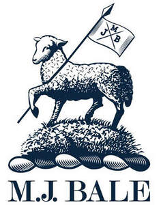

Trade Mark Journal No.2025/045 7 November 2025
UK00004285624 29 October 2025 (14,18,25,35)

- Class 14
- Jewellery and costume jewellery including earrings, necklaces, chains, anklets, brooches, rings, charms, pendants, ornamental pins and studs, cuff links, wrist bands and collar tips; horological and chronometric instruments including watches and clocks, and parts of these goods; watch accessories including watch bands, watch chains, watch straps and watch cases; jewellery cases, jewellery boxes and jewellery pouches in this class; medallions, badges of precious metal or coated therewith; keyrings, key chains and key fobs in this class; metal works of art.
- Class 18
- Bags of leather, animal skins and hides, and imitations of these materials; bags of textile materials; bags including net bags, beach bags, sports bags, athletic bags, tote bags, carry bags, rucksacks, knapsacks, backpacks, waist packs, school bags, satchels, shoulder bags, hand bags, clutch bags and shopping bags; travel bags, garment bags, trunks and luggage; luggage articles including luggage tags of leather and luggage straps; money wallets and purses; cases including travel cases, overnight cases, brief cases, document cases, credit card cases, business card cases, cosmetic, toiletry and vanity cases in this class; key cases and key holders and key rings, all being of leather, animal hides and imitations thereof in this class; umbrellas and umbrella covers; clothing for pets; collars for animals; key cases.
- Class 25
- Clothing; footwear; headgear.
- Class 35
- Retail services and online retail services in relation to jewellery, horological and chronometric instruments and parts and accessories therefor, jewellery cases, boxes and pouches, medallions and badges, ornamental pins, cufflinks, collar tips, keyrings, key chains, key holders and fobs, works of art; retail services and online retail services in relation to bags, cases, document and card holders and cases, toiletry and vanity cases, wallets and purses, luggage articles, umbrellas, clothing, footwear, headgear, clothing accessories and fashion accessories, clothing and collars for animals and pets; compilation of information into computer databases; computerised database management; price and product comparison services; systemisation of data in computer databanks and databases; sales promotion (for third parties); advertising and marketing services; advertising the goods of other vendors enabling customers to conveniently view and compare the goods of those vendors; market research and market studies; customer loyalty scheme services; administrative incentive and loyalty card services; compilation and provision of price and product description information; product information services for the purposes of advertising and retail and for the purposes of comparative pricing; compilation and provision of product descriptions and comparative information; price monitoring services; data management services; online trading services, namely, operating online marketplaces for sellers and buyers of goods and services; online trading services in which sellers post products or services to be traded or offered for sale and purchasing or bidding is done via the Internet in order to facilitate the sale of goods and services by others via a computer network; providing evaluative feedback and ratings of sellers' goods and services, the value and prices of sellers' goods and services, buyers' and sellers' performance, delivery, and overall trading experience in connection therewith; providing a searchable online advertising and trading guide featuring the goods and services of online vendors; providing a searchable online evaluation database for buyers and sellers; advertising and advertisement services; marketing services; business and business management services.
Newbale Holdings Pty Limited
Representative: Venner Shipley LLP